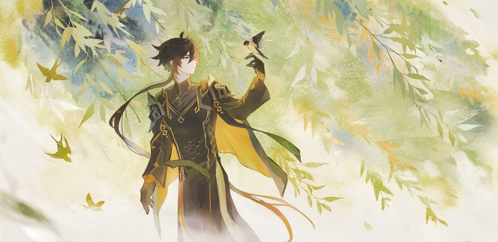
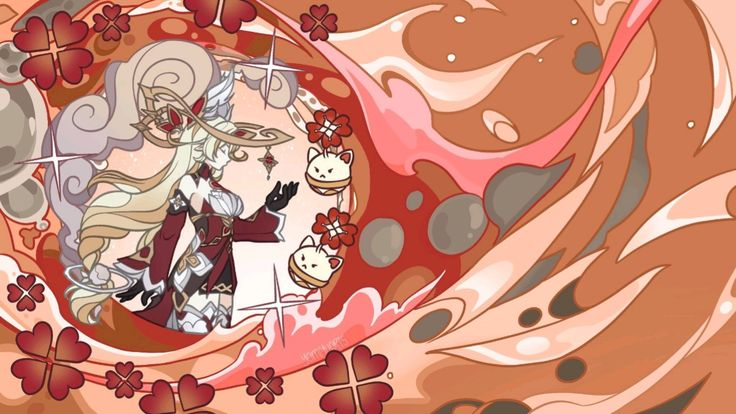
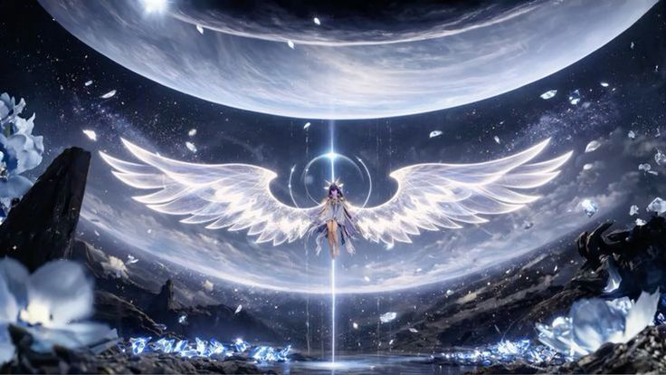
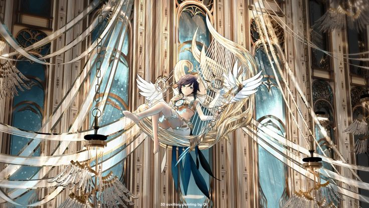
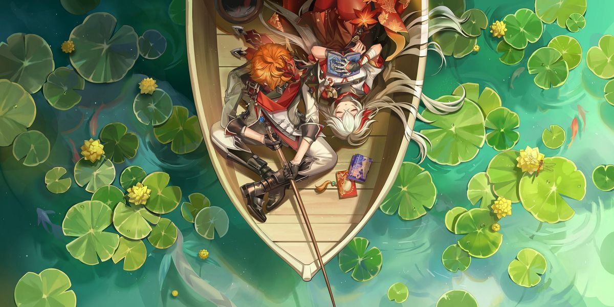
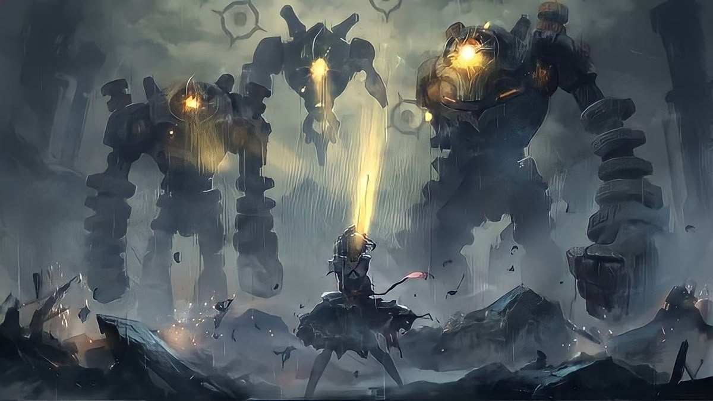
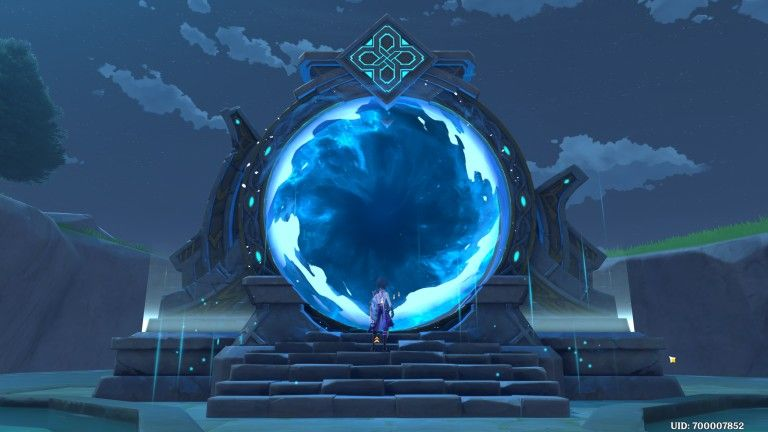

Back home
-
Don’t waste Mora. Almost all materials in the game can be farmed for free, so there’s usually no need to buy
them. Mora should mainly be spent on upgrading weapons, artifacts, character talents, and character levels.
For everything else, avoid spending it unless you have no alternative. You can also get Mora and resources
through exploration, so focus first on gathering ores and needed materials, and only then farm Mora if
required.

-
Don’t waste artifacts or enhancement ore early in the game. At the start, aim for decent 4★ artifacts to
keep up with content, and avoid heavy investment unless the artifact is truly good. Prioritize the correct
main stats for your character, and artifacts with Crit Rate and Crit Damage substats are usually worth
upgrading. Focus your resources on a small team instead of spreading them out. Once you can farm 5★
artifacts, start replacing weaker gear and use unwanted artifacts as fodder for stronger ones.

-
Resin! Don’t waste it, lol—use it mainly for artifacts and character ascension materials you actually need,
or just enjoy the game. You can also level characters to get blue wishes, but otherwise focus on your main
team, especially your main DPS. Artifacts are where most of your stats come from, so farming the right
domains and matching with other players worldwide can help you get better gear faster and tackle
higher-level domains. The Genshin community is very helpful, and you’ll find players willing to assist.

-
Artifact farming route is a free daily activity where you can investigate up to 100 points. These spots
usually give food, materials, or artifacts. There are guides online showing the best routes that drop
artifacts instead of food. In early game it’s not necessary due to chest rewards, but later it becomes very
useful once chests run out. The run takes only about 10–15 minutes, so it’s worth starting early.

-
I used to spend a lot of time farming mob materials for weapon upgrades and character ascension/talents.
There’s a useful trick: instead of using external maps, you can open the Adventurer’s Handbook and go to the
“Enemies” tab, then use the navigation button to automatically mark their locations on your map. This also
helps with artifact farming, since some enemies drop artifacts as well as materials. Keep in mind it shows
both respawned and already cleared enemies.

-
I recommend using strong 3★ weapons before investing in 4★ ones. If you already have a 4★ weapon with good
stats for your character, use it, but otherwise 3★ options can be very effective early on. I’ve included
examples of useful 3★ weapons and two very good F2P 4★ weapons. Check official sources.

-
The Abyss is a great source of Primogems for pulling characters, so building a strong team for it is
important. Even with top-tier characters like Hu Tao, you can struggle if you don’t have the right team,
despite having decent artifacts. That’s why it can be better to invest in some F2P characters early on,
since there are many guides showing how to clear all content in the game with F2P setups.
